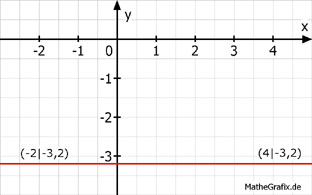

Lineare Funktionen Aufgabe 46 Ergänzen Sie die Wertetabellen für die Graphen der Funktionen: 5y + 16 = 0 5y + 16 = 0 | -16 5y = -16 | :5 y = -3,2 Die Funktion hat an jeder Stelle auf der x-Achse den Wert -3.2. x -2 4 y -3,2 -3,2 